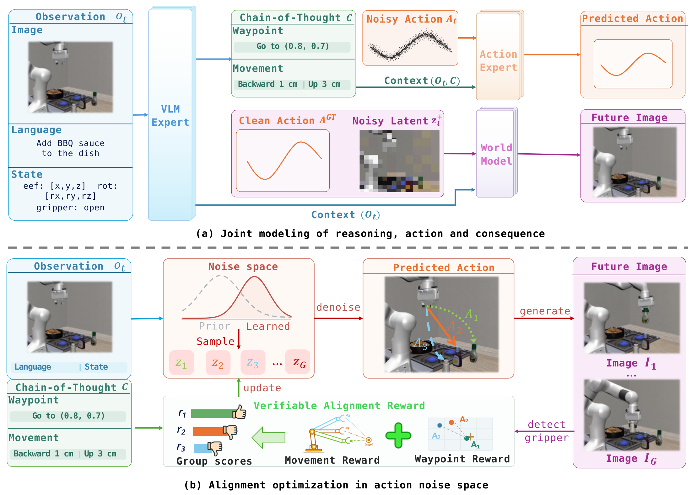
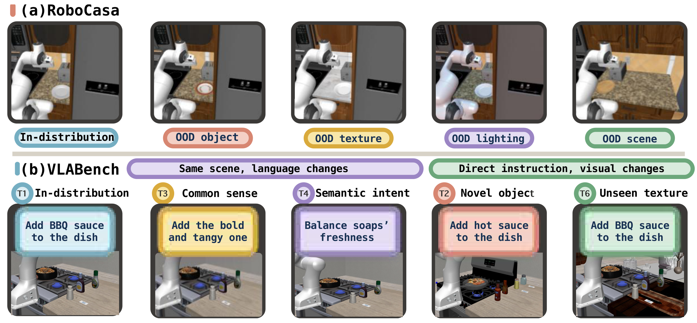
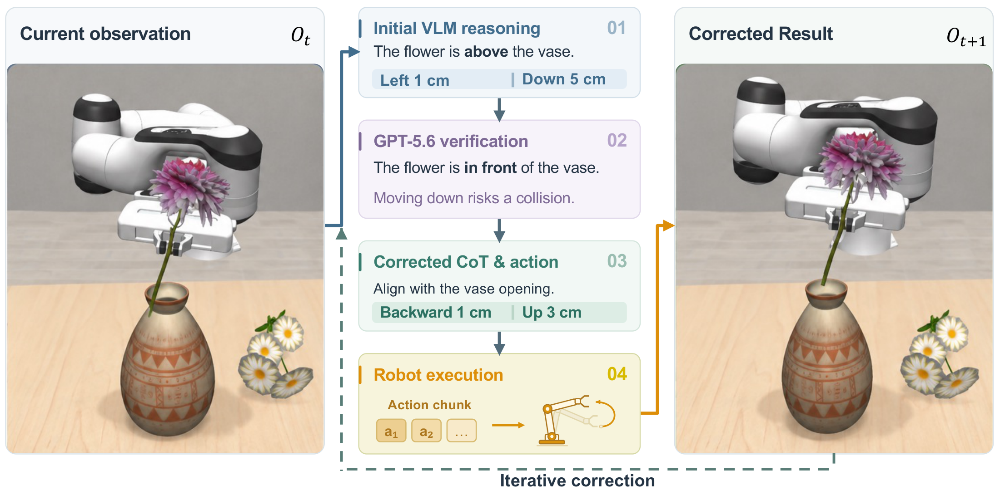
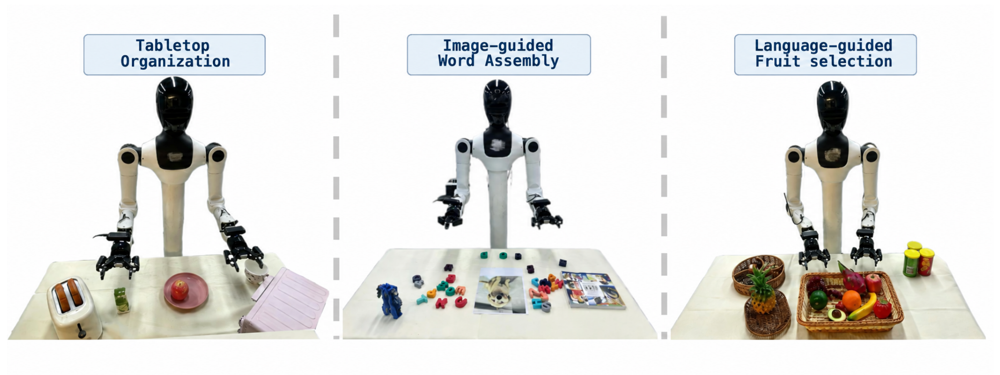

Tabletop
organization
Remove an apple from a plate, then place juice on the plate.
56.6%CoRAct
task success
task success
REASONING → ACTION → CONSEQUENCE
Align intended motion with generated actions
and their predicted consequences.
Introduction video will appear here.
01 / THE IDEA
From implicit conditioning to explicit, consequence-grounded alignment.
Not just what to do.
But whether the action
follows the reasoning.
Reasoning informs decision-making by connecting intended actions with their expected consequences. Building on this principle, recent vision-language-action models incorporate embodied chains of thought (ECoTs) as an intermediate stage in action generation. However, such guidance remains implicit, as actions are conditioned on the generated ECoTs rather than explicitly optimized to align with them. To bridge this gap, we introduce the Consequence-grounded Reasoning-to-Action alignment method called CoRAct, an offline training framework that explicitly aligns reasoning and action through reward-guided optimization in action noise space.
Specifically, CoRAct formulates two physically grounded ECoT components as verifiable signals: movement specifies the intended motion, whereas waypoints encode the expected spatial consequence of execution. By jointly modeling ECoT reasoning, action generation, and action-conditioned future prediction, a unified Mixture-of-Transformers explicitly couples each action with its articulated intent and predicted consequence. For action candidates generated from sampled noise, CoRAct computes alignment rewards based on motion consistency with the described movement and agreement between predicted outcomes and the specified waypoints. These rewards drive group-relative optimization of the initial noise distribution, steering action generation toward consistency with the articulated intent and expected consequence.
Extensive experiments across RoboCasa, VLABench, and real-world manipulation tasks demonstrate consistent gains in task success and generalization over strong ECoT-based VLA baselines. Further analyses reveal improved reasoning–execution alignment and show that our method can ground externally provided ECoTs in executable behavior, supporting zero-shot adaptation to novel scenarios by leveraging knowledge from powerful VLMs.
The key idea Turn movement descriptions and expected waypoints into verifiable alignment signals.
02 / THE METHOD
Jointly model reasoning, actions, and consequences.
Then align them in action noise space.

A unified Mixture-of-Transformers learns two complementary streams. §3.1
Predicts structured ECoT: movement and waypoints.
Generates action chunks conditioned on observation and ECoT.
Predicts a future observation conditioned on the action.
No ECoT shortcut: ECoT tokens are excluded from the future-prediction stream, so the image expert cannot directly read the target waypoint.
Freeze the backbone; optimize only the conditional noise policy. §3.2
Compare action-chunk endpoint translation, rotation, and gripper command with the movement specified by ECoT.
Localize the gripper in the predicted future image and compare it with the ECoT waypoint.
Transfer alignment preferences into the action sampling distribution. §3.3
Encode observation and reasoning.
Sample from the learned policy.
Produce the action chunk.
Single-sample action generation: candidate-level verification is performed during alignment training, not repeated as a multi-candidate selection loop at deployment.
03 / BENCHMARK RESULTS
In-distribution evaluation and generalization across
RoboCasa and VLABench.
| Method | T1 ID | T2 Category | T3 Common sense | T4 Semantic intent | T6 Texture |
|---|---|---|---|---|---|
| π0.5 | 40.6 | 22.6 | 18.0 | 16.1 | 25.6 |
| π0 | 47.0 | 21.2 | 29.1 | 17.3 | 32.2 |
| CoVer-VLA | 40.9 | 23.4 | 32.6 | 35.4 | 26.8 |
| LaST0 | 40.9 | 21.1 | 34.4 | 35.0 | 26.6 |
| CoRAct Ours | 51.8 | 24.3 | 34.4 | 36.2 | 30.0 |
CoRAct leads on T1, T2, and T4, and ties LaST0 on T3. π0 has the highest T6 result. Bold indicates the best value in each column.
| Method | ID In-distribution | OOD Object | OOD Texture | OOD Lighting | OOD Scene |
|---|---|---|---|---|---|
| π0.5 | 72.6 | 67.8 | 59.6 | 64.7 | 51.6 |
| π0 | 63.6 | 55.1 | 54.7 | 59.0 | 51.0 |
| CoVer-VLA | 65.1 | 58.4 | 56.6 | 60.1 | 52.1 |
| LaST0 | 69.0 | 63.7 | 63.7 | 66.5 | 55.5 |
| CoRAct Ours | 75.5 | 70.3 | 65.9 | 66.9 | 60.0 |
CoRAct has the highest reported success rate in each RoboCasa setting shown in Table 1. Bold indicates the best value in each column.
Tables 1 and 2 report 75.5% for full-model RoboCasa in-distribution success; the prose in §4.3 reports 75.4%. This page uses the table values. The discrepancy has not been independently resolved.

BEYOND SUCCESS RATE
With both alignment objectives, the generated actions better match the ECoT’s movement and waypoint targets.
No alignment objectives Both alignment objectives · Table 3. Bars are scaled within each metric.
| Movement CoT | Waypoint CoT | Movement align. | Waypoint align. | VLABench | RoboCasa |
|---|---|---|---|---|---|
| — | — | — | — | 39.2 | 68.6 |
| ✓ | — | — | — | 44.3 | 72.9 |
| ✓ | ✓ | — | — | 47.5 | 73.5 |
| ✓ | ✓ | ✓ | — | 49.3 | 74.6 |
| ✓ | ✓ | ✓ | ✓ | 51.8 | 75.5 |
04 / CLOSED-LOOP SELF-CORRECTION
An external agent revises erroneous movement descriptions.
CoRAct translates the corrected reasoning into actions.

When the initial ECoT misreads the scene, the agent changes the movement description rather than retraining the policy.
Observe the execution state.
Revise the movement description.
Generate and execute a new action chunk.
| Reasoning–action alignment | Agent correction | Insert Flower | Chemistry Tube |
|---|---|---|---|
| — | — | 24.0 | 22.0 |
| ✓ | — | 26.0 | 30.0 |
| — | ✓ | 52.0 | 40.0 |
| ✓ | ✓ | 66.0 | 52.0 |
05 / REAL-WORLD EXPERIMENTS
Long-horizon manipulation and semantic understanding
across three real-robot tasks.

Remove an apple from a plate, then place juice on the plate.
Select and arrange letters to form the word shown in a reference image.
Pick three specified types of fruit from a bowl.
| Method | Tabletop organization | Image-guided word assembly | Language-guided fruit selection |
|---|---|---|---|
| π0.5 | 33.3 | 26.6 | 56.6 |
| LaST0 | 40.0 | 33.3 | 50.0 |
| CoVer-VLA | 33.3 | 26.6 | 50.0 |
| CoRAct | 56.6 | 46.6 | 63.3 |
The supplied manuscript is anonymized.
A complete citation can be added when author and publication details are available.